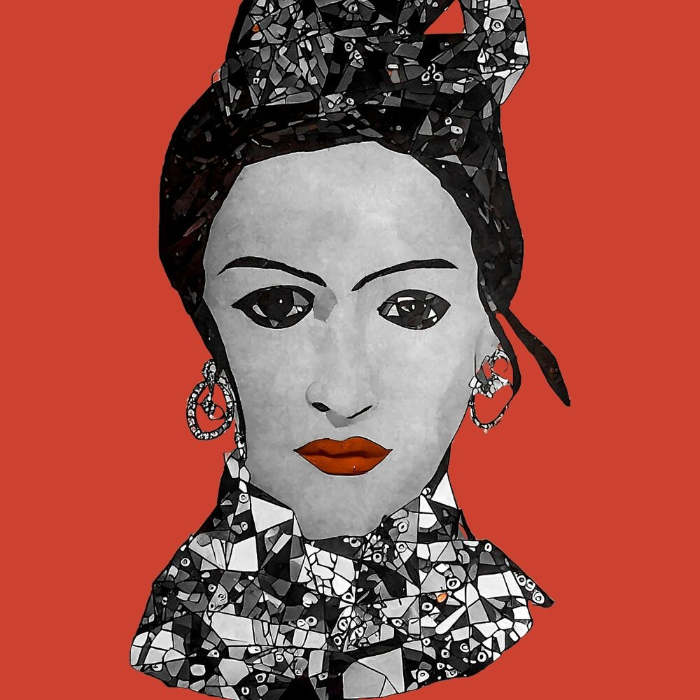
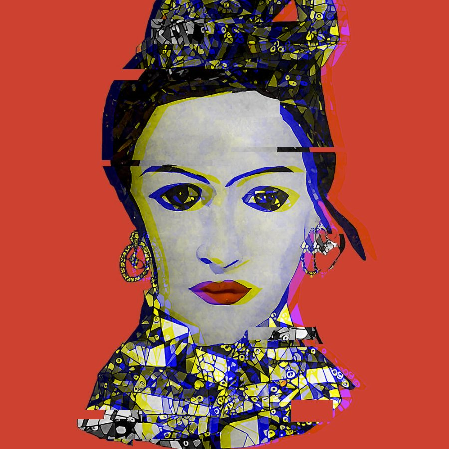
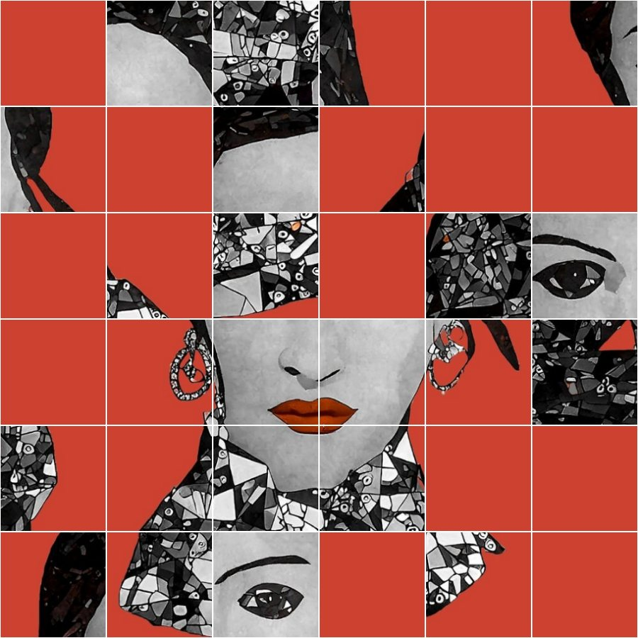
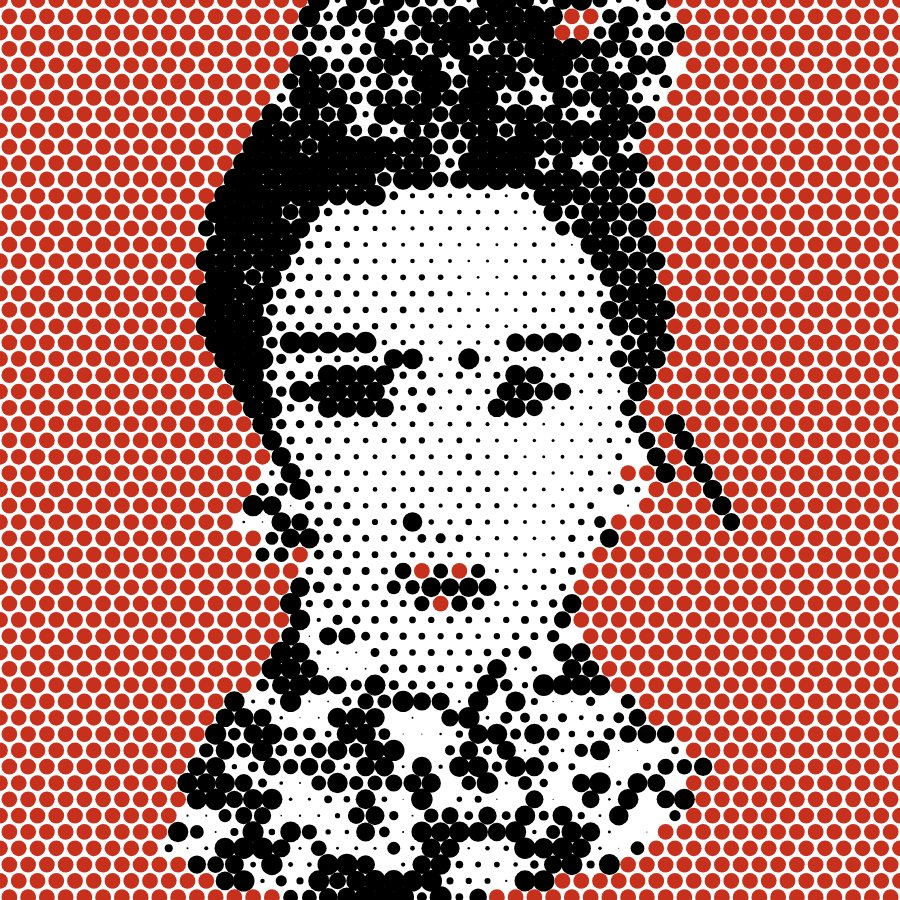
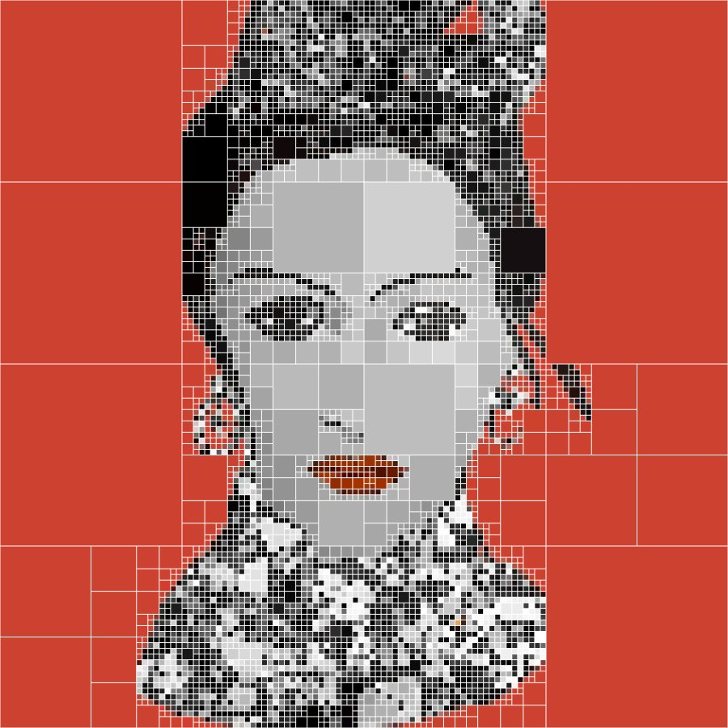
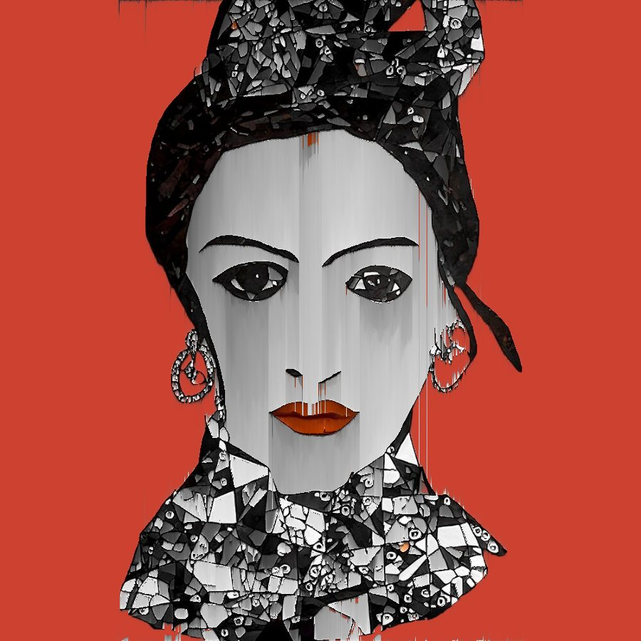
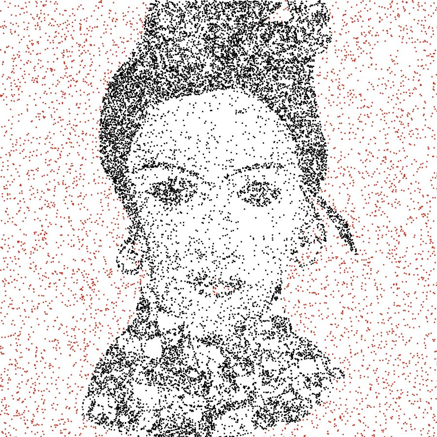

ORNAMENT LAB 0.1, eine Werkstatt von Christian Strickler. Läuft ganz im Browser, nichts wird hochgeladen.
Ein Bild wird Material.
Operationen verändern es, Varianten stehen nebeneinander, jede lässt sich weiterführen. Erzeugen, beobachten, weiterführen.
Ein Durchgang in fünf Schritten.
- MaterialEin Bild, ein Video oder ein Ton. Alles bleibt auf deinem Gerät.
- OperationenBildfilter, Linienbilder, Komposition, Klang. Jede mit Herkunft und Parametern.
- NebeneinanderEin Sinus oder gehaltener Zufall verteilt einen Parameter über sechs Varianten.
- NacheinanderDer Verlauf wird zum Film über Stationen, im Takt eines Tons, als MP4.
- ProtokollJede Entscheidung mit ihrer Art: Mensch, Zufall, Regel oder jev.
Vorschlag für 30 Sekunden.
Mit Bild und Ton schlägt das Lab einen Film vor. Du übernimmst ihn oder wählst neu.
Sechs Abschnitte, zwei Klänge, vier Dramaturgien, ein Format von 9:16 bis 16:9. Am Schluss das Signet.

Probier es am Bild.
Vier Verfahren aus dem Lab, hier vereinfacht und direkt im Browser gerechnet. Im Lab hat jedes seine Parameter, Varianten und einen Verlauf für den Film.

Was im Lab steht.
Am besten in Chrome, auch am Handy. Bilder und Töne bleiben auf deinem Gerät.
Das Lab öffnen
Zum Labornament.cloud/alpha/lab
Am Handy, in vier Sprachen: ornament.cloud/alpha/lab/handy
Das ganze Lab spricht vorerst Deutsch.